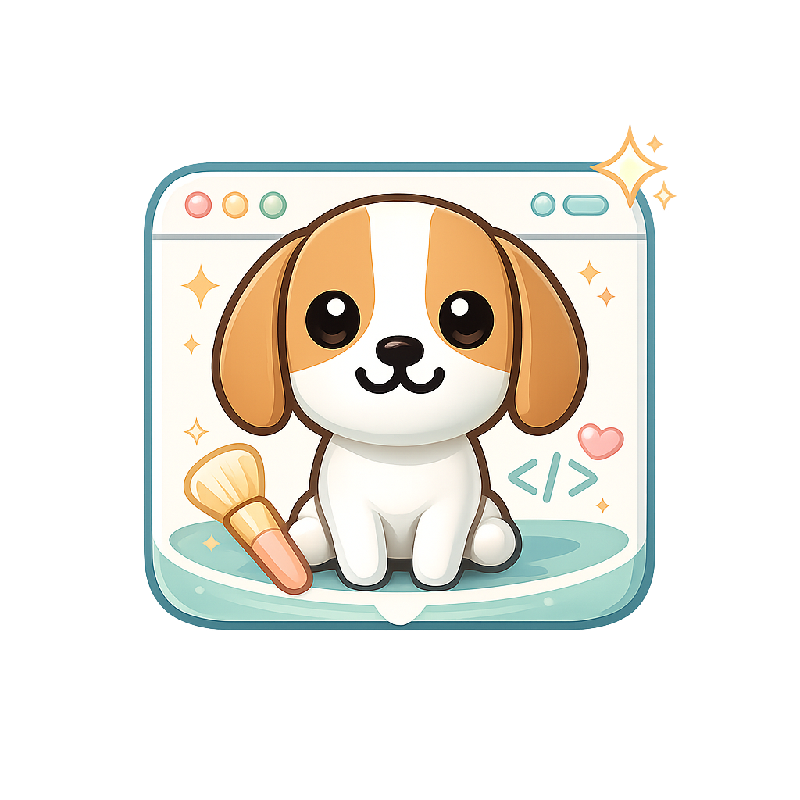

1
選出你的品牌
回答左邊的問題，想像你希望別人怎麼認識你。
先做 Logo，再把作品、影片與預約功能放進網站，最後用 ChatGPT 與 Codex 把想法真正做出來。

選完後，下面的 AI 指令會更貼近你的品牌。
先選目的與內容，再貼上你的作品集或 YouTube 連結，讓 Codex 幫你完成網站。
先整理你的想法，再讓 Codex 幫你把它變成網站。
不用先學會寫程式。先選出你喜歡的主題、風格和功能，讓 AI 幫你整理成一段可以交給 Codex 的網頁指令。
把「我不知道要怎麼說」變成「我選好了，請幫我做」。你可以隨時回來修改。
課堂上不用追求一次做完，先讓網站動起來，再慢慢變漂亮。
回答左邊的問題，想像你希望別人怎麼認識你。
複製右邊指令，貼到 ChatGPT 裡的 Codex，請它修改你的網站。
看到結果後，繼續告訴 AI 你想改的地方，最後分享你的網址。